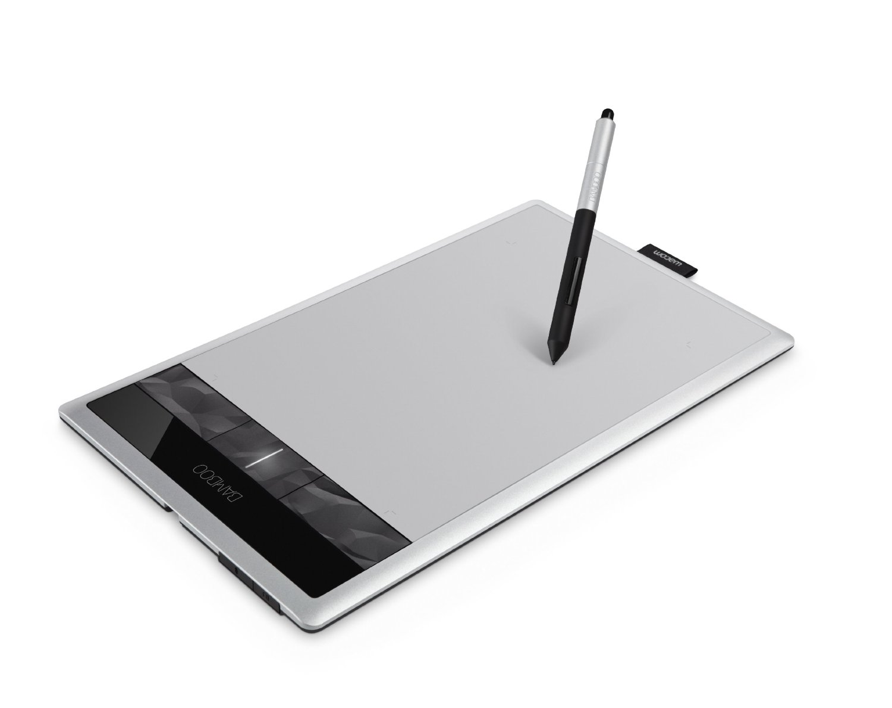
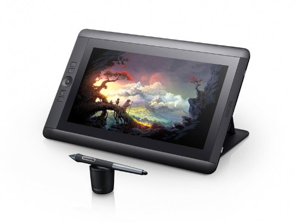
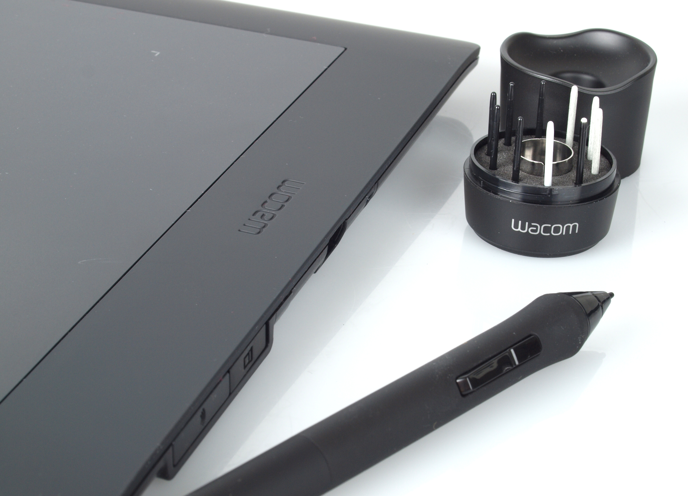

Bamboo Pen Tablet
Bring your full creativity to life with the natural feel of a pen on paper. Edit digital photos, paint, draw and sketch
Free downloadable creative software included: Photoshop Elements, Corel Painter Essentials, AutoDesk Sketchbook Express and Nik Color Filters and free offers from Shutter fly, Café Press and Digitalscrapbookplace.com. To obtain the software, register the item with the included installation CD, which will take you to download.wacom.com.Read more

Cintiq 24 HD
High Definition - If creating and viewing HD imagery is part of your daily workflow, you will appreciate the 24-inch HD (1920x1200) display
Color Performance - Featuring a 92% Adobe RGB color gamut, the Cintiq 24HD is an ideal display for color-critical workflows, such as animation, photography, and video editing.
Wide-Screen Dynamics - With a generous 24-inch display, a 16:10 aspect ratio, and an ultra-wide viewing angle, the Cintiq 24HD is perfect for developing wide-screen content
Working Under Pressure - With 2048 levels of pen pressure sensitivity and 40 degrees of tilt recognition, you'll feel just like you're working with a traditional paintbrush, marker, pen, or pencil.Read more

Intuos 5
Quickly and professionally edit photos and create digital artwork using natural pen control
Use the new multi-touch surface to pan, zoom, navigate and more
2048 levels of pen pressure sensitivity for precise pressure control
User-defined ExpressKeys put time saving shortcuts, at your fingertips
Read more